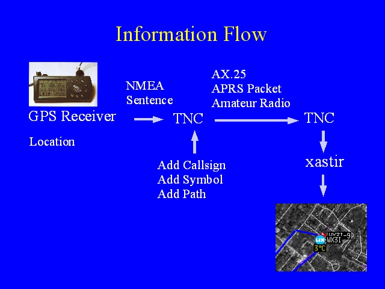

Notes:
The GPS receiver works out its position, this is sent on the the TNC as a standard NMEA sentence, this is decoded and placed into an APRS packet along with the tracker's call sign, symbol, and path. This signal is transmitted by radio, received by another station, decoded and displayed on a map.